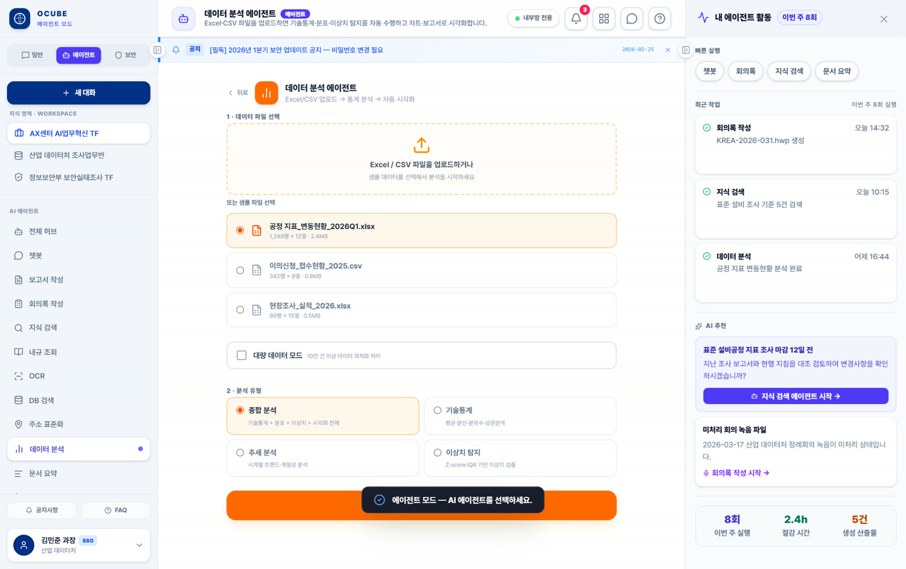
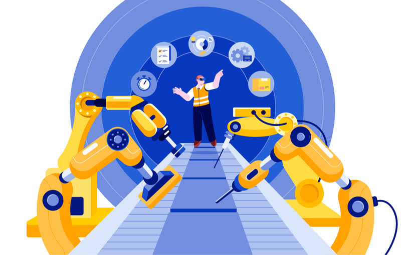
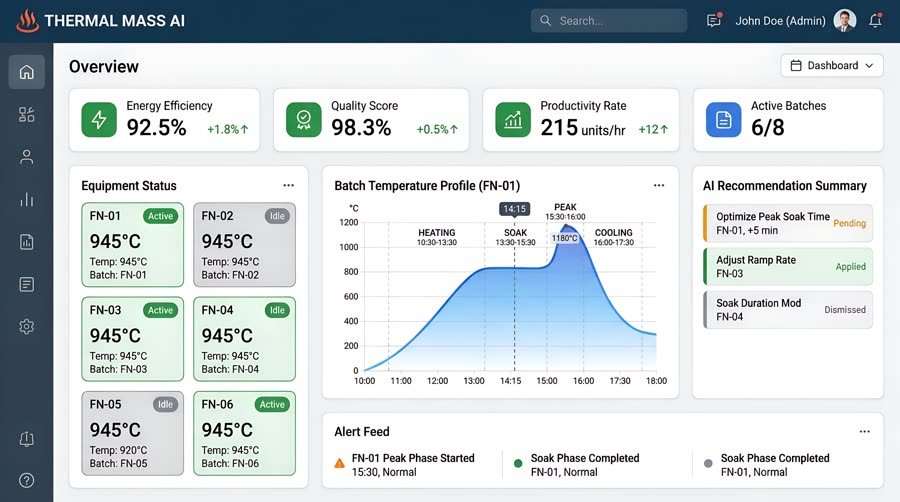
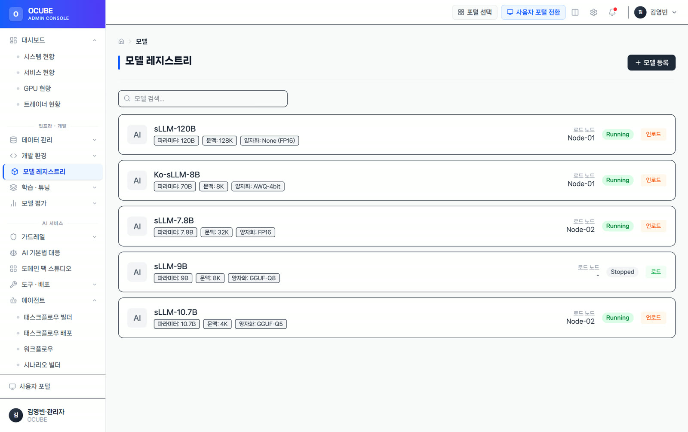
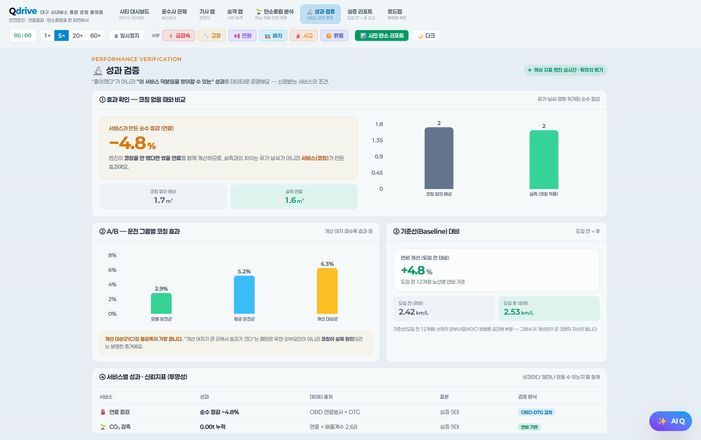

01Data Foundation
AI–현장 운영기술(AI-OT) 통합·표준화
분산제어·품질관리·설비제어·생산관리 데이터와 센서 정보를 시간·생산 작업 단위·설비 기준으로 정렬합니다.
- 연결 데이터
- 공정·설비·품질·에너지·물류
- 현장 활용
- 정합성 검증, 원인 추적, AI 학습용 표준 데이터
AI 스마트 팩토리 — 공장 전주기를 데이터로 연결합니다. 공정·설비·품질·에너지·안전 데이터를 통합해 이상과 낭비를 예측하고, 운영자의 판단과 단계적 제어를 지원합니다.
분산제어(DCS)·품질관리(QCS)·설비제어(PLC)·생산관리(MES) 데이터와 센서 정보를 시간·생산 작업 단위로 연결합니다.
열에너지, 설비, 품질, 안전을 함께 분석해 운영자의 판단과 단계적 제어를 지원합니다.

QFactory는 흩어진 제조 데이터를 연결하고 예측 결과를 현장 운영으로 이어주는 AI 스마트 팩토리 플랫폼입니다. 기존 설비 환경을 존중하며 필요한 공정부터 단계적으로 적용합니다.

QFactory는 단일 분석 모델이 아닙니다. 데이터 통합부터 에너지·설비·품질·안전·운영까지, 현장 과제에 맞춰 확장하는 제조 AI 체계입니다.
분산제어·품질관리·설비제어·생산관리 데이터와 센서 정보를 시간·생산 작업 단위·설비 기준으로 정렬합니다.
열원 생산과 스팀 소비를 함께 분석해 과열·과소 공급을 줄일 운전 조건을 권고합니다.
회전체와 건조 설비의 상태 변화를 분석해 이상·위험도·잔존수명을 예측합니다.
원료·첨가제부터 최종 품질까지 시간·Lot 이력을 연결해 편차 원인을 찾습니다.
영상과 설비 이벤트를 결합해 위험 행동·구역 접근·화재·이상 상황을 감지합니다.
모델을 학습·배포·감시하고 권고–승인–조치–결과 확인을 하나의 운영 흐름으로 만듭니다.
단계적 도입 기존 설비를 전면 교체하지 않고, 기존 설비 보완용 센서와 현장 엣지 연계를 활용해 필요한 공정부터 확장합니다.
설비 상태를 진단하고, 담당자가 검토할 공정·
설비 신호의 미세한 변화를 학습해 불량과 고장의 전조를 조기에 포착하고, 잔존수명(RUL)을 추정합니다. 임계 알람이 놓치는 복합 패턴을 잡습니다.
세 가지 지능화 자세히 →
이상치 탐지 분석 — 프로토타입 예시 화면
열처리·

공정 최적화 대시보드 — 예시 화면
공정 변화에 따른 모델 성능 저하를 감시하고 재학습 시점을 판단합니다. 새 모델은 검증과 배포 절차를 거쳐 운영에 반영합니다.
AI 모델 운영 자세히 →
모델 레지스트리 — 프로토타입 예시 화면
설비·
| 기능 축 | 대상 설비· | 핵심 기법 | 산출물 |
|---|---|---|---|
| 이상 조기감지 | 회전기· | 시계열 이상탐지(정상 패턴 학습) + LLM 원인 질의응답 | 이탈 알람 · 근거 · 조치 가이드 |
| 공정 조건 권고 | 열처리· | 상태진단 · 품질 데이터 기반 프로파일 권고 | 권고 공정 조건 · 품질 편차 리포트 |
| 예지보전 | 설비 부하· | 잔존수명(RUL) 예측 · 정비 시점 산정 | RUL · 정비 권고 · 비계획 정지 위험에 사전 대응 |
수집 프로토콜·
정상 패턴 학습 후 미세 이탈 조기 감지 — 근거와 함께
운전 이력·
설비 잔존수명 예측·
QFactory는 QData가 표준화한 데이터를 입력받아 판단하고, Cubeon 운영 계층에서 관제·
설비 신호를 표준화·
OPC-UA·
QData 공통 스키마·
시계열 특징값을 추출하고 정상 패턴을 학습해 이상탐지 기준선을 만듭니다.
미세한 이탈을 조기에 찾고 설비의 남은 사용 가능 기간을 예측합니다.
생성형 AI 질의응답으로 원인·
현장 피드백과 데이터 변화를 반영해 AI 모델을 주기적으로 다시 학습
서로 다른 설비·
예지보전·
현장은 계속 변합니다. 학습 → 배포 → 감시 → 재학습 흐름으로 운영 중 성능 저하를 확인하고 대응하도록 구성합니다.
Cubeon의 AI 모델 운영 기능과 연동합니다. 모델 자동 배포·지속적 재학습·버전 관리 체계를 적용합니다.
고정 임계 감시로는 잡지 못하는 미세 이탈과 원인·
| 관점 | 규칙 기반 임계 감시 | QFactory 제조 AI |
|---|---|---|
| 이상 감지 | 고정 임계 초과 시 알람(사후) | 정상 패턴 학습 후 미세 이탈 조기 감지 |
| 원인 파악 | 사람이 로그를 수동 추적 | 생성형 AI 질의응답으로 원인· |
| 공정 조건 | 고정 레시피 유지 | 상태· |
| 정비 | 주기· | 잔존수명 예측 기반 예지보전 |
| 운영 | 수동 튜닝· | 데이터 변화 감시· |
규칙 기반 감시를 대체하는 것이 아니라 보완합니다 — 기존 임계 알람 위에 AI 판단 레이어를 얹는 전환 경로를 권장합니다.
과제 체결 불량·
해결 시계열 이상탐지 + 생성형 AI 질의응답
성과 후공정 유출 전 조기 검출 — 재작업 위험을 줄이는 체계 구축
과제 고온 열처리 품질이 숙련자 경험 의존
해결 상태진단·
성과 숙련자 경험을 데이터로 표준화 — 품질 편차 관리
과제 분산제어(DCS)·품질관리(QCS)·설비제어(PLC) 데이터 분산, 열에너지·
범위 시간·생산 작업 단위 표준화, 열에너지 최적화, 설비 건전성·
진행 2026~2029 연구개발·

데이터 반출이 어려운 제조 현장까지 — 동일 제품을 세 형태로 배포하도록 설계합니다.
상용 LLM API·
사내 서버 sLLM·
망분리 대응. 반출 불가 데이터도 현장 내에서 추론
상용 대규모 언어모델(LLM) API와 사내 소형 언어모델(sLLM)을 현장 보안·